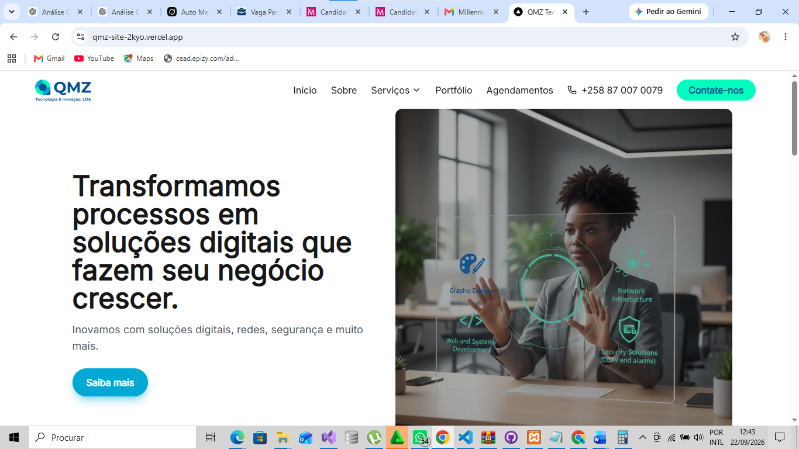
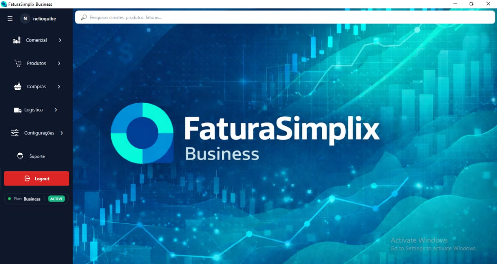
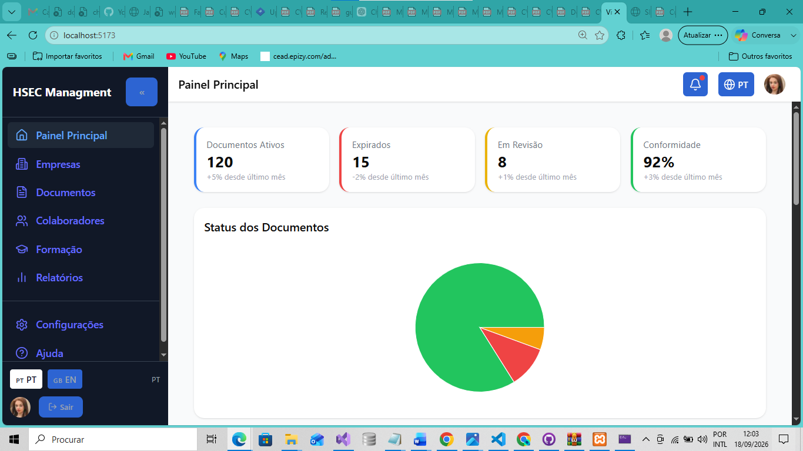
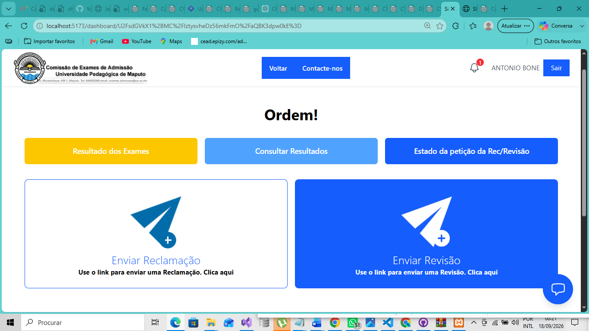
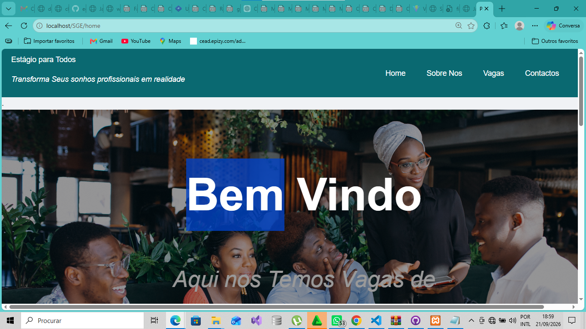

Backend e APIs
PHP, Laravel, C#/.NET, ASP.NET Core, Python, APIs REST, CRUD, Programação Orientada a Objectos e MVC.
PROFISSIONAL DE INFORMÁTICA E SISTEMAS
Licenciado em Informática com experiência prática em desenvolvimento Web e desktop, sistemas empresariais, suporte técnico, APIs, bases de dados e integração de tecnologias.
Desenvolvo soluções a partir de problemas reais, combinando análise de requisitos, organização técnica e implementação de sistemas orientados à utilização prática.
01 — SOBRE MIM
Sou Licenciado em Informática e profissional orientado ao desenvolvimento, manutenção e evolução de sistemas de informação. Tenho experiência prática em desenvolvimento Web e desktop, análise de requisitos, modelação de dados, implementação de regras de negócio, integração de APIs e organização de arquitecturas aplicacionais.
Ao longo do meu percurso, trabalhei com diferentes contextos tecnológicos, desde aplicações Web em PHP e Laravel até sistemas empresariais desenvolvidos com C#/.NET, aplicações React, serviços em Python e soluções suportadas por bases de dados relacionais.
A minha experiência também inclui suporte técnico, manutenção de computadores, diagnóstico de problemas de hardware e software, configuração de periféricos e resolução de problemas básicos de conectividade e infraestrutura.
Tenho particular interesse por projectos em que seja necessário compreender o problema, estruturar a solução, implementar funcionalidades e garantir que o sistema possa evoluir de forma organizada.
EXPERIÊNCIA INSTITUCIONAL
QMZ TECNOLOGIA & INOVAÇÃO, LDA
No âmbito da QMZ Tecnologia & Inovação, Lda., participo na administração e no desenvolvimento de soluções tecnológicas orientadas a necessidades reais de negócio.
A minha participação envolve a concepção, arquitectura, implementação, integração e evolução de sistemas, abrangendo aplicações Web, sistemas comerciais, websites institucionais, APIs, bases de dados e componentes de suporte à operação.
Entre os trabalhos desenvolvidos destacam-se o website institucional da QMZ, com arquitectura headless e CMS Strapi, e o FaturaSimplix Business, sistema de facturação e gestão comercial em evolução contínua.
Explorar os projectos desenvolvidos →02 — COMPETÊNCIAS
PHP, Laravel, C#/.NET, ASP.NET Core, Python, APIs REST, CRUD, Programação Orientada a Objectos e MVC.
JavaScript, TypeScript, React, Next.js, HTML5, CSS3, Bootstrap, Tailwind CSS e interfaces responsivas.
MySQL, SQL Server, PostgreSQL, SQLite, modelação de dados, consultas, relações, persistência e migrações.
Regras de negócio, facturação, pagamentos, recibos, auditoria, permissões, licenciamento e fluxos transaccionais.
Git, GitHub, Bitbucket, Swagger/OpenAPI, Postman, Insomnia, Visual Studio, VS Code, Figma e Strapi.
Diagnóstico de hardware e software, manutenção de computadores, instalação de sistemas operativos, periféricos, LAN, Wi-Fi e troubleshooting.
03 — PROJECTOS
Uma selecção de projectos académicos, independentes e institucionais que representam diferentes áreas da minha experiência em análise, desenvolvimento e evolução de sistemas.

PROJECTO INSTITUCIONAL · DESENVOLVIMENTO 100% PRÓPRIO
Website institucional desenvolvido para a QMZ, com frontend em Next.js, gestão dinâmica de conteúdos através do Strapi Headless CMS e publicação preparada na Vercel.

QMZ · SISTEMA EMPRESARIAL
Sistema desktop de facturação e gestão comercial, com participação na evolução de regras de negócio, auditoria, licenciamento, permissões, devoluções e fluxos transaccionais.

PROJECTO INDEPENDENTE
Sistema Web para gestão de Saúde, Segurança, Ambiente e Compliance, com arquitectura multi-tenant e módulos orientados à gestão documental, riscos, incidentes, auditorias e relatórios.

MONOGRAFIA · IA APLICADA
Sistema de Gestão de Reclamações e Revisões de Exames, desenvolvido com Laravel e integrado com componentes de Inteligência Artificial em Python.

DESENVOLVIMENTO WEB
Plataforma Web concebida para ligar faculdades, empresas parceiras e estudantes através da gestão de vagas e candidaturas a estágios.
04 — EXPERIÊNCIA
Participação na administração e no desenvolvimento de soluções tecnológicas, incluindo o website institucional da empresa e o FaturaSimplix Business.
Trabalho com desenvolvimento Web, sistemas empresariais, arquitectura, integração de tecnologias, bases de dados, manutenção e evolução de software.
Concepção, arquitectura e implementação de uma plataforma Web para gestão de Saúde, Segurança, Ambiente e Compliance, com arquitectura multi-tenant e módulos empresariais.
Participação em actividades de manutenção e actualização de website, desenvolvimento de protótipos, suporte técnico, manutenção de computadores, diagnóstico de problemas de hardware e software e configuração básica de redes e periféricos.
05 — FORMAÇÃO
06 — CONTACTO
Estou disponível para oportunidades em Informática, Desenvolvimento Web, Suporte Técnico, Helpdesk, Suporte de Sistemas, Manutenção de Aplicações e colaboração em projectos de software.